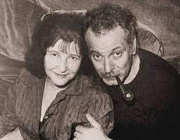

Je me suis fait tout petit
I have shrunk so small
Georges Brassens (1956)
|
|
|
(1) "A doll who shuts her eyelashes when laid flat and cries "Mama" when you touch her": In the 1950s, the novelty of the dolls that you bought for little girls was that their eyes closed when you lay them flat and that there was place on their back, which you squeezed to get a sound like "Mama"! (2) "A flower of a girl" (literally "a pretty periwinkle"): Brassens is talking of a pretty girl who had come into his life. By talking of her as a flower, he wants to soften the drama of what could have been a romantic and domestic crisis. Does he endeavour to prevent most listeners from understanding the vindictiveness of the attack which the "Doll" ("Püppchen") made on an innocent girl? In view of the jocular tone of the whole song there are grounds to doubt it.
(3) "You tie the not": If it were his strained relationship with Joha Heiman, that Brassens has in mind, he would be pushing the joke a bit far, by talking of hanging himself! But in familiar French this expression means "to get married": a prediction of the "sleepwalk psychics and magi" (somnambules et mages) which did not materialize, though the "Doll" shared Georges' life from 1947 until his death in October 1981!
(4) Like for most of the Brassens songs at this site, these notes are borrowed from David Yendley's blog (http://dbarf.blogspot.fr/2012/05/alphabetical-list-of-my-brassens-songs.html). |
(1) "Poupée - qui ferme les yeux quand on la couche et fait Maman quand on la touche": Dans les années 1950, le dernier cri en matière de poupées destinées aux petites filles, était qu'elles ferment les yeux quand on les inclinait et qu'en leur appuyant sur le dos, on produise un son ressemblant à "Maman". (2) "Une jolie pervenche...": Brassens parle d'une jolie fille qui avait surgi dans sa vie. En en parlant comme d'une fleur, il veut banaliser le drame que fut peut-être cette crise sentimentalo -domestique. Veut-il empêcher l'auditeur de prendre la mesure de la hargne qui animait la "Poupée" ("Püppchen") envers cette pauvre fille? Le ton badin de l'ensemble permet d'en douter.
(3) "S'il faut se pendre": Si c'est à sa relation orageuse avec Joha Heiman qu'il pense, Brassens pousserait certainement la plaisanterie un peu loin, en parlant de se pendre! Mais on sait que "se pendre" ou "se passer la corde au cou" signifie "se marier": une prédiction des somnambules qui ne se réalisa jamais malgré la durée du couple (de 1947 jusqu'à la mort de Georges en octobre 1981).
(4) Comme pour la plupart des chansons de Brassens sur ce site, ces notes sont tirées du blog de David Yendley (http://dbarf.blogspot.fr/2011/01/). |
|
 Brassens chante "Je me suis fait tout petit" |